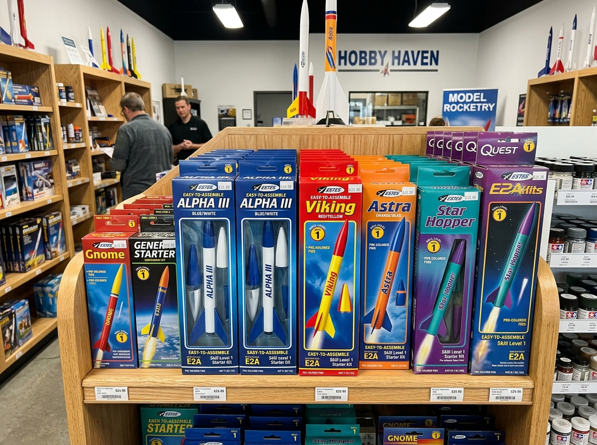
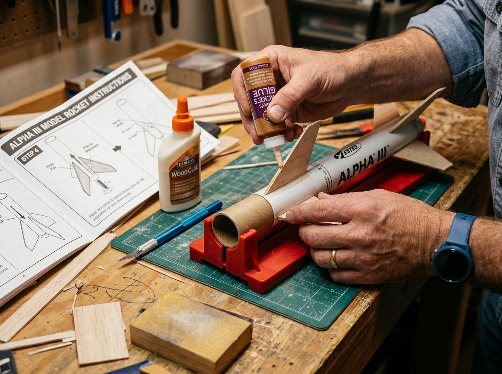
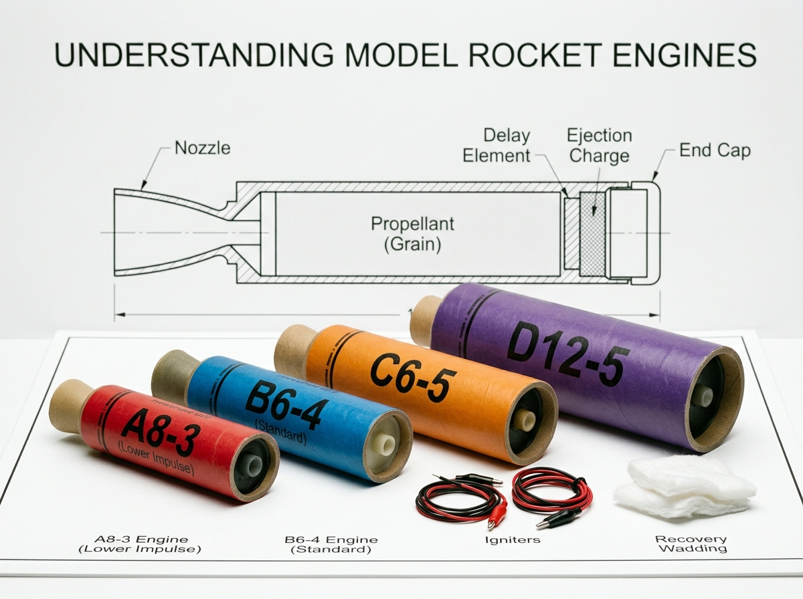
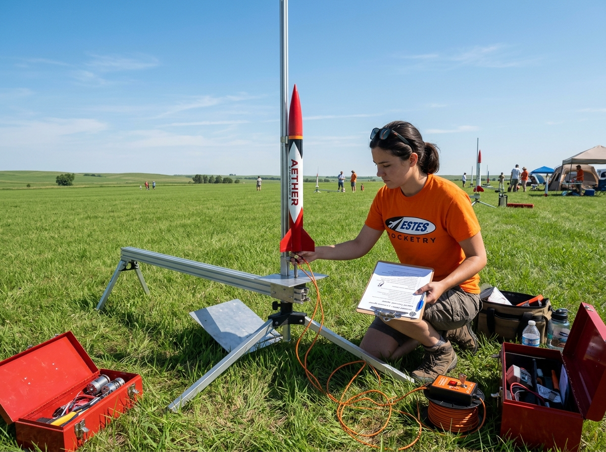
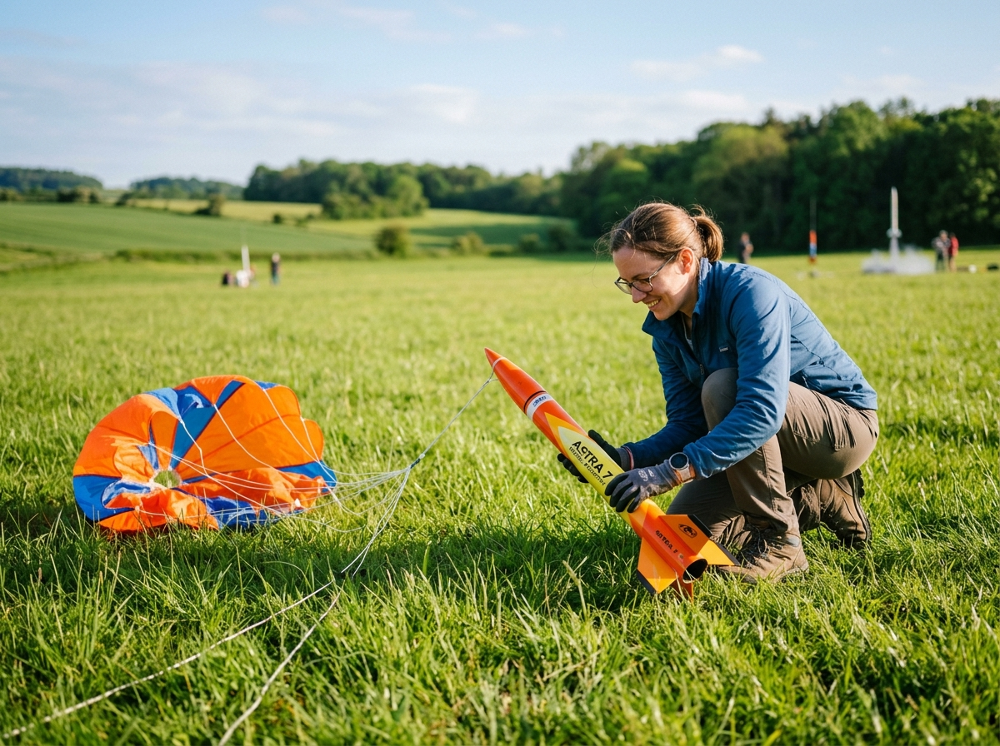

Everything you need to know to build, launch, and recover your first model rocket safely and successfully. No prior experience required.

As a beginner, start with a skill level 1 kit. These are designed for easy assembly with pre-colored plastic parts that snap together or require minimal gluing. Look for kits labeled "Ready to Fly" (RTF) or "Easy to Assemble" (E2X).
Key factors to consider: body tube diameter (larger is easier to handle), fin material (plastic fins are more durable for beginners), and engine compatibility (A and B class engines are ideal for first launches).
Browse Beginner Kits
Before you start, read through the entire instruction sheet. Lay out all components and verify you have everything. Work in a well-ventilated area with a clean, flat surface.
For glued kits, use wood glue for balsa fins and plastic cement for plastic components. Apply glue sparingly — excess glue adds weight. Let each joint dry completely before moving to the next step. Patience during assembly directly affects flight performance.
Shop Supplies
Model rocket engines use a standardized naming system. For example, "B6-4" tells you three things:

Choose a large, open field free of trees, power lines, and buildings. Check wind conditions — light winds under 10 mph are ideal. Set up your launch pad on flat, non-flammable ground.
Use the NAR Safety Code as your checklist: maintain a safe distance (at least 15 feet for A-C engines), use an electrical launch system with a safety key, and always launch vertically. Never attempt to catch a falling rocket.
Join a Launch Event
Most model rockets use a parachute or streamer recovery system. After the engine burns out, an ejection charge deploys the recovery device, allowing your rocket to float gently back to Earth.
To prepare for recovery: fold your parachute loosely (not too tight), use a bit of recovery wadding to protect the chute from the ejection charge, and always track your rocket visually during descent to locate the landing spot.
Recovery GearModel rocketry is a safe hobby when proper guidelines are followed. Here are the key rules to always keep in mind.
Only use commercially manufactured, NAR/TRA certified motors. Never modify or create your own propellant.
Keep spectators at least 15 feet back for low-power and 100 feet for high-power launches. Use a 5-second countdown.
Children under 12 should always have adult supervision. Teens 12-18 should have a knowledgeable adult present.
Quick answers to the most common questions from first-time rocketeers.
A complete starter setup including a beginner kit, engine pack, launch pad, and controller runs about $50-$75. Individual launches cost about $3-5 per engine after that. It's one of the most affordable STEM hobbies available.
Beginner rockets with A-class engines typically reach 100-300 feet. B and C class rockets can reach 500-1,000 feet. Advanced high-power rockets with D-G engines can exceed 2,000 feet. Always check local airspace regulations.
For beginner kits: wood glue, a hobby knife, sandpaper (220 and 400 grit), and optionally spray paint. More advanced kits may require epoxy, a ruler, and clamps. We offer complete tool kits in our accessories section.
Yes, model rocketry with commercially made, certified motors is legal throughout the United States. Low-power rockets (A-D class) don't require any permits. High-power rockets may need FAA notification. Check your local city/county ordinances for any specific restrictions.